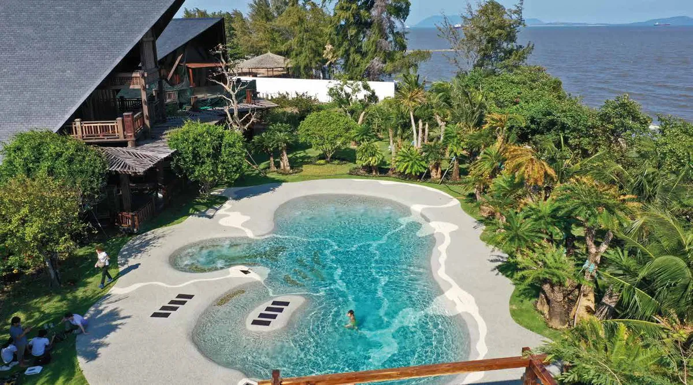
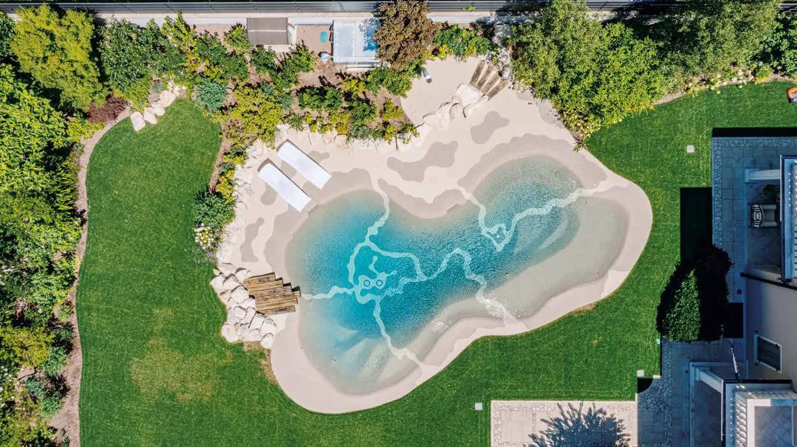

Si estás pensando en hacer o renovar una piscina, la primera gran decisión es el acabado del vaso. El gresite es el clásico de toda la vida: mosaico azul, formas rectas y escalera. La piscina de arena es la alternativa que más está creciendo: un acabado de arena y piedra natural con formas libres y entrada tipo playa. En este artículo te contamos en qué se diferencian, qué ventajas tiene cada una y cómo elegir.
¿Qué es el gresite?
El gresite es un mosaico de pequeñas piezas vítreas que se pega con cemento cola sobre el vaso de hormigón ya impermeabilizado, rejuntando pieza a pieza. Es resistente, se fabrica en muchos colores (aunque el azul es el más habitual) y es el acabado que la mayoría tenemos en la cabeza cuando pensamos en una piscina.
Sus puntos débiles suelen estar en las juntas: con los años pueden oscurecerse, acumular algas o perder piezas, y obligan a revisiones y reparaciones periódicas. Además, el diseño suele limitarse a formas geométricas con escalera o peldaños de obra.
¿Qué es una piscina de arena?
En una piscina de arena el vaso se reviste con una mezcla de arena, cuarzo y guijarros naturales. El resultado recuerda al fondo de una playa: el agua toma un color turquesa natural, las orillas son suaves y la entrada puede ser gradual, como en la orilla del mar.
En Apavi Green trabajamos con Bio.design, el fabricante italiano que lleva más de 40 años desarrollando este sistema. Su tecnología es patentada, el revestimiento incorpora protección antibacteriana Microban y las juntas de dilatación sinuosas reducen las tensiones que provocan grietas.

Comparativa: piscina de arena vs gresite
| Gresite | Piscina de arena | |
|---|---|---|
| Aspecto | Clásico, mosaico de colores (normalmente azul) | Natural, efecto playa, agua turquesa |
| Formas | Sobre todo geométricas | Libres y orgánicas, totalmente a medida |
| Entrada al agua | Escalera o peldaños | Gradual tipo playa (y también escalones si se quiere) |
| Juntas | Muchas, entre cada pieza | Pocas, sinuosas y pensadas para evitar grietas |
| Tacto | Liso, resbaladizo en zonas de paso | Mineral, agradable al pisar descalzo |
| Integración | Destaca como elemento construido | Se integra en el jardín y el paisaje |
| Precio | Suele ser la opción de partida más económica | Proyecto a medida: depende de forma, tamaño y acabados |
Ventajas de la piscina de arena
- Entrada tipo playa: muy cómoda para niños, personas mayores y mascotas, sin escaleras metálicas.
- Diseño libre: la forma se adapta al terreno y al jardín, no al revés.
- Aspecto natural: la arena y el cuarzo dan al agua un color que no se consigue con gresite.
- Agradable al tacto: el revestimiento mineral es cómodo para pasear descalzo por las zonas de poca profundidad.
- Revestimiento antibacteriano: la protección Microban ayuda a mantener el vaso limpio durante más tiempo.

¿Cuándo tiene sentido el gresite?
El gresite sigue siendo una buena opción si buscas una piscina rectangular sencilla, de uso deportivo (nadar largos) o con un presupuesto inicial ajustado. También si quieres un estilo clásico o un color muy concreto del mosaico.
¿Cómo elegir?
- Elige piscina de arena si quieres una piscina diferente, integrada en el jardín, con entrada de playa y pensada para disfrutar en familia o para alojamientos turísticos.
- Elige gresite si priorizas una forma rectangular estándar, nadar largos o el presupuesto de partida.
¿Piscina de arena en Tenerife? Somos concesionario oficial de Bio.design para la provincia de Santa Cruz de Tenerife. Toda la información en piscinas de arena en Tenerife y en la web de nuestra concesión, piscinadearenatenerife.com.
Completa el exterior
Alrededor de la piscina, un borde que no resbale y no se encharque marca la diferencia. Te lo contamos en suelo antideslizante para el borde de la piscina. Y para las zonas verdes, mira nuestro césped artificial en Tenerife.
Preguntas frecuentes
¿Qué es una piscina de arena?
Es una piscina en la que el vaso se reviste con una mezcla de arena, cuarzo y guijarros naturales en lugar de gresite. Permite formas libres y entradas graduales, como una playa.
¿Es más cara una piscina de arena que una de gresite?
Depende del proyecto. Una piscina rectangular de gresite suele ser la opción más económica de partida; la piscina de arena es un proyecto a medida cuyo precio depende de la forma, el tamaño, el terreno y los acabados. Lo mejor es pedir presupuesto de las dos opciones para tu caso.
¿Se puede convertir una piscina de gresite en una de arena?
En algunos casos sí, según el estado y la forma del vaso actual. Hay que valorarlo en una visita técnica.
¿Dónde instaláis piscinas de arena?
Apavi Green es concesionario oficial de Bio.design para la provincia de Santa Cruz de Tenerife: Tenerife, La Palma, La Gomera y El Hierro. Para otras zonas te orientamos y te ponemos en contacto con el concesionario correspondiente.